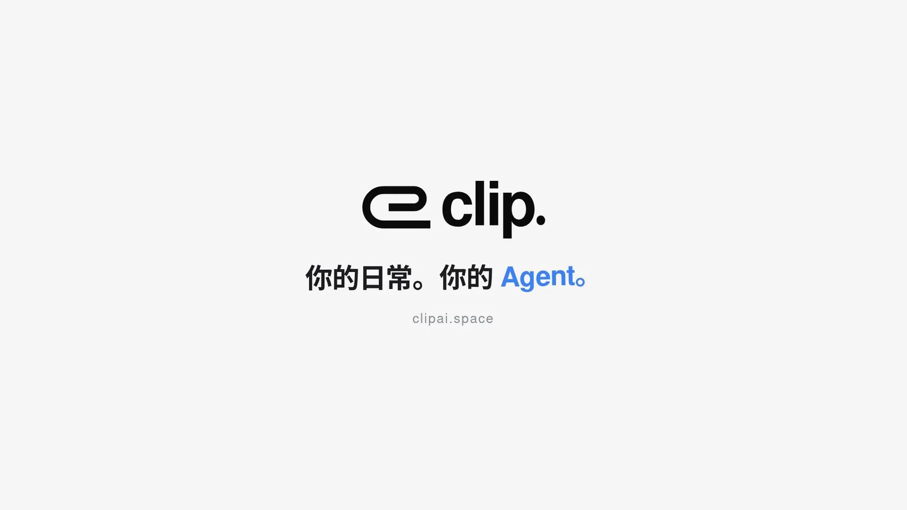

01
Clip AI Card
Personal Agent 软硬件
官网与概念演示已上线 · 硬件在研
问题
想法和材料出现在日常里，但交给 Agent 前，要先打开电脑、整理上下文、反复授权。
方案
一张可折叠的卡片，连接眼前的材料与已授权的 Agent：语音 / 视觉采集 → 上下文预览与授权 → Agent 执行 → 状态回执。
- 卡片 · iPhone · Mac 三端协同
- 先预览、再发送：采集与发送分别授权
- Mac 直连方案支持原始材料留在本地
我的角色产品定义 · 交互方案 · 数据权限设计 · 官网
访问 clipai.space ›